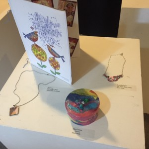
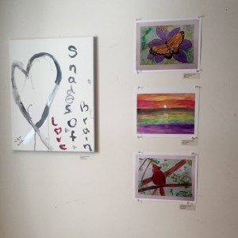

Stress and anxiety are correlated to overall wellness and healing. The Cancer Support Center provides comprehensive counseling and stress management programs that are delivered by high quality professionals. Counseling in private sessions or support group environments can help you and your loved ones cope with emotional responses, manage stress and find effective ways to communicate with family members and healthcare providers. Family, child and couples counseling are also offered.
Call to schedule a Personal Planning Session (PPS) with a counselor to create a program plan that is right for you.
Also, view our program calendar to see upcoming events: Click here!
 